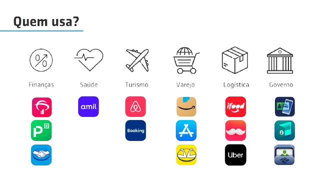

O 2FA é um procedimento de segurança que garante que serão necessários 2 fatores únicos para liberação de uma ação.
Beneficios
• Plataforma intuitiva que permite visualizar relatórios de uso por dia, mês ou ano e pesquisar
usando diversos critérios de filtro.
• Flexibilidade de canais garante que o usuário conseguirá completar a tarefa desejada mesmo quando
tiver problema com um deles
Exemplo Enviar OTP por SMS, em caso de falha, enviar OTP por chamada
de voz,em caso de outra falha, enviar por e mail.
• Ofereça segurança aprimorada para seus clientes.
• API simples e de rápida implementação.
• Envio de OTP por meio de vários canais incluindo SMS, voz ou e- mail.
• Reduza casos de fraude e invasões e evite o acesso a dados por invasores.
